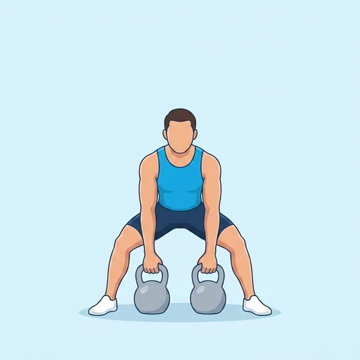
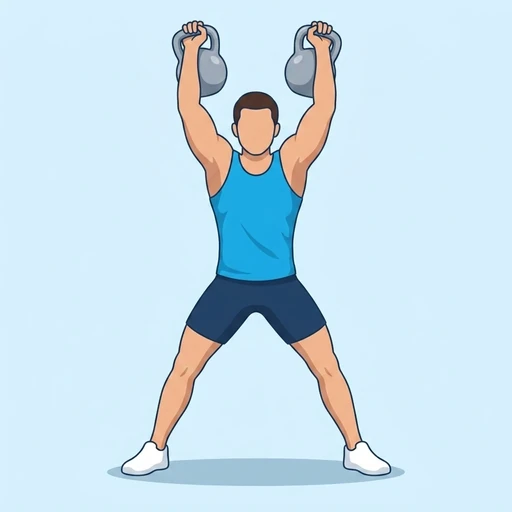
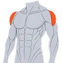

Double Kettlebell Clean and Press
A full-body power exercise that cleans two kettlebells from the floor to the racked position at the shoulders and then presses both overhead to lockout in one continuous sequence.
Shoulders · Kettlebell · Advanced


Muscles worked by the Double Kettlebell Clean and Press
Primary

Side DeltsLateral DeltoidSecondary
Also called: front deltoid, anterior delt, front delt, anterior deltoid, side deltoid, lateral delt.
Equipment
Also called: kb, cast iron kettlebell, competition kettlebell, girya.
How to do the Double Kettlebell Clean and Press
- Stand with two kettlebells on the floor between your feet, feet about hip-width apart, and hinge at the hips to grip one handle in each hand.
- Drive through your legs and extend your hips explosively to pull both kettlebells up, then rotate your elbows under and catch the bells in the racked position at the front of your shoulders.
- Brace your core and press both kettlebells overhead until your arms are fully locked out.
- Lower the kettlebells back to the racked position, then down to the floor under control.
- Repeat for the desired number of reps.
Form tips
- Keep the kettlebells close to your body during the clean and punch your hands around and through the handles as you catch them, so the bells settle on your forearms instead of banging into them.
- Use a slight dip-drive from the legs and hips to start the press, then finish with the shoulders — keep your core tight so you do not lean back under the load.
- At lockout keep your wrists straight and the kettlebells stacked over your elbows and shoulders, with your head returning to a neutral position between the bells.
At a glance
| Body part | Shoulders |
|---|---|
| Category | Strength |
| Force type | Push |
| Mechanic | Compound |
| Difficulty | Advanced |
| Equipment | Kettlebell |
| Goals | Power, Strength, Hypertrophy |
| Tags | Push day |
| MET | 8.0 (metabolic equivalent, for calorie estimates) |
| Unilateral | No |
| Bodyweight | No |
| Dataset id | double-kettlebell-clean-and-press |
Double Kettlebell Clean and Press in German & Spanish
| German | Doppel-Kettlebell Clean and Press |
|---|---|
| Spanish | Clean and press con doble kettlebell |
Descriptions, instructions and tips ship in all three languages in the JSON.
Related exercises
Exercise data (JSON)
The record below is exactly what exercises.json ships for this exercise — names, descriptions, instructions and tips in English, German and Spanish.
{
"id": "double-kettlebell-clean-and-press",
"name_en": "Double Kettlebell Clean and Press",
"name_de": "Doppel-Kettlebell Clean and Press",
"name_es": "Clean and press con doble kettlebell",
"description_en": "A full-body power exercise that cleans two kettlebells from the floor to the racked position at the shoulders and then presses both overhead to lockout in one continuous sequence.",
"description_de": "Eine Ganzkörper-Kraftübung, bei der zwei Kettlebells vom Boden in die Racking-Position an den Schultern gecleant und anschließend in einer durchgehenden Bewegung über Kopf bis zum Lockout gedrückt werden.",
"description_es": "Un ejercicio de fuerza de cuerpo completo que sube dos kettlebells desde el suelo hasta la posición de rack en los hombros y luego las presiona por encima de la cabeza hasta la extensión completa en una secuencia continua.",
"category": "strength",
"force_type": "push",
"mechanic": "compound",
"difficulty": "advanced",
"equipment": "kettlebell",
"body_part": "shoulders",
"primary_muscles": [
"anterior_deltoid",
"lateral_deltoid"
],
"secondary_muscles": [
"gluteus_maximus",
"quadriceps",
"rectus_abdominis",
"trapezius",
"triceps_brachii"
],
"goals": [
"power",
"strength",
"hypertrophy"
],
"tags": [
"push_day"
],
"variation_group": "clean",
"is_unilateral": false,
"is_bodyweight": false,
"instructions_en": [
"Stand with two kettlebells on the floor between your feet, feet about hip-width apart, and hinge at the hips to grip one handle in each hand.",
"Drive through your legs and extend your hips explosively to pull both kettlebells up, then rotate your elbows under and catch the bells in the racked position at the front of your shoulders.",
"Brace your core and press both kettlebells overhead until your arms are fully locked out.",
"Lower the kettlebells back to the racked position, then down to the floor under control.",
"Repeat for the desired number of reps."
],
"instructions_de": [
"Stelle dich mit zwei Kettlebells auf dem Boden zwischen den Füßen hin, die Füße etwa hüftbreit, und beuge dich aus der Hüfte, um mit jeder Hand einen Griff zu fassen.",
"Drücke dich explosiv aus den Beinen und strecke die Hüfte, um beide Kettlebells nach oben zu ziehen; drehe dann die Ellbogen darunter und fange die Bells in der Racking-Position vorne an den Schultern.",
"Spanne den Rumpf an und drücke beide Kettlebells über Kopf, bis die Arme vollständig gestreckt sind.",
"Senke die Kettlebells zurück in die Racking-Position und anschließend kontrolliert zum Boden ab.",
"Wiederhole die Bewegung für die gewünschte Wiederholungszahl."
],
"instructions_es": [
"Colócate con dos kettlebells en el suelo entre los pies, separados a la anchura de las caderas, y flexiona las caderas para agarrar un asa con cada mano.",
"Empuja con las piernas y extiende las caderas de forma explosiva para tirar de ambas kettlebells hacia arriba; luego rota los codos por debajo y recibe las pesas en la posición de rack, al frente de los hombros.",
"Activa el core y presiona ambas kettlebells por encima de la cabeza hasta bloquear los brazos por completo.",
"Baja las kettlebells de vuelta a la posición de rack y después al suelo de forma controlada.",
"Repite las repeticiones deseadas."
],
"tips_en": [
"Keep the kettlebells close to your body during the clean and punch your hands around and through the handles as you catch them, so the bells settle on your forearms instead of banging into them.",
"Use a slight dip-drive from the legs and hips to start the press, then finish with the shoulders — keep your core tight so you do not lean back under the load.",
"At lockout keep your wrists straight and the kettlebells stacked over your elbows and shoulders, with your head returning to a neutral position between the bells."
],
"tips_de": [
"Führe die Kettlebells beim Clean nah am Körper und schiebe die Hände um die Griffe herum und durch sie hindurch, damit die Bells sanft auf den Unterarmen landen, statt dagegenzuschlagen.",
"Leite den Druck mit einem leichten Dip-Drive aus Beinen und Hüfte ein und schließe mit den Schultern ab – halte den Rumpf fest, damit du dich unter der Last nicht nach hinten lehnst.",
"Halte im Lockout die Handgelenke gerade und die Kettlebells über Ellbogen und Schultern gestapelt, den Kopf zwischen den Bells in neutraler Position."
],
"tips_es": [
"Mantén las kettlebells cerca del cuerpo durante el clean y pasa las manos alrededor y a través de las asas al recibirlas, para que las pesas se asienten sobre los antebrazos en lugar de golpearlos.",
"Inicia la presión con un breve impulso de piernas y caderas (dip-drive) y termina con los hombros; mantén el core firme para no inclinarte hacia atrás bajo la carga.",
"En el bloqueo mantén las muñecas rectas y las kettlebells alineadas sobre los codos y los hombros, con la cabeza en posición neutra entre las pesas."
],
"met": 8.0,
"images": {
"flat": {
"start": "images/flat/double-kettlebell-clean-and-press-start.webp",
"peak": "images/flat/double-kettlebell-clean-and-press-peak.webp"
}
}
}Fetch just this exercise
const { exercises } = await fetch(
"https://exercise-dataset.com/exercises.json"
).then(r => r.json());
const ex = exercises.find(e => e.id === "double-kettlebell-clean-and-press");Free for personal and commercial in-app use with attribution (“Exercise data by RepDB”) — see the license and ready-made attribution snippets. Redistributing the data as a dataset or API is not permitted.